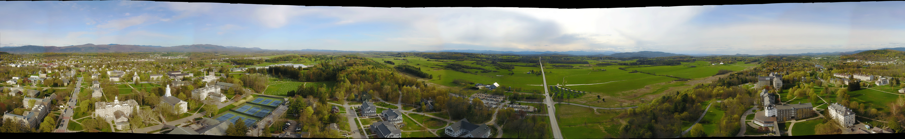

Terrain Mapping Applications Using Drone Image Data
Henry Mound
Introduction
This independent study was, in a sense, a continuation of the research I started last summer with Professor Grant regarding the computer vision applications of drones. The original goal was to calculate image depth in real-time using Tello EDU drones.
Stereo Vision
The original Tello drones, which I used over the summer, do not support drone swarm applications by default. I was previously able to control two Tello drones simultaneously by using two different WiFi antennas and instructing each antenna to connect to each Tello individually. With the updated Tello EDU, however, swarm connectivity is supported out of the box.
In order to control multiple EDUs in swarm, each drone must know which base station network to connect to and the password of said network. I was able to achieve this using a TP-Link router and sending the following command: ap TP-Link_0F46 10534212. The ap command tells the drone to enter station mode, and the following two parameters are the network name and password, respectively. After each drone was connected to the network, the next challenge was to find the IP addresses of each Tello EDU connected. For this, I entered into the local router configuration page and found the starting addresses of all connected devices. In this case, the starting IP address was 192.168.10.1. I put together a simply Python script that pinged 500 addresses starting at 192.168.10.1 and incrementing by 1. With the Tellos connected, the IP addresses 192.168.10.101 and 192.168.10.102 were the only ones with a reply. I could then further identify which address corresponded to which drone by using packet sender to issue basic flight commands.

Continuing with the goal of implementing stereo vision, the next step was to pull video from both drones. It was easy to connect to both drones simultaneously using Python and issue basic flight commands, but pulling video proved more problematic. After many failed attempts and consulting both community-developed and official Tello APIs, I discovered that the firmware of the Tello EDUs does not support the streamon command, which initializes a video feed, while the drones are in station mode. This was a big problem for the goal of the independent study. I tried connecting to the drones outside of station mode with external WiFi antennas to no avail. I also tried running two separate virtual machines simultaneously, each with independent WiFi cards, and connecting each VM to a Tello. This, still, did not allow for simultaneous video streams. I reached this block at the middle of the third week of the semester. After consulting with Professor Grant, we decided to pivot to a new direction.
SFM: Structure From Motion
On the subject of image processing and drone footage and after discussing different computer vision algorithms with Professor Scharstein, I started exploring COLMAP. COLMAP is an end-to-end image-based 3D reconstruction pipeline. There are open-source versions for both the GUI-based and command-line programs. As this independent study focused heavily around the use of drones, I found it important to take advantage of the image applications that are unique to only drone applications. Along the topic of depth reconstruction, I set to work using COLMAP to generate 3D models of BiHall. With the smaller form factor of the Tello and its default 30m hight limit, it would have been a difficult drone to use for this application. So, using a Mavic Pro I had access to, I took sequential images from a constant height looping around all of BiHall. For the fist run, I took a total of 76 images of the building from equally-spaced angles roughly 5 degrees apart. Using the latest pre-release version of COLMAP and the pictures of BiHall, I was able to generate a point-cloud 3D model of the building. Here are some of the input images and their output:
This process was very graphics-heavy. Because the software is open-source and supported on all major operating systems, I was able to try it with various setups. The point-cloud result was encouraging, but I was hoping to actually generate a 3D model with the mapped building textures. According to the documentation, this is something the COLMAP software supports. I ran the algorithm on macOS, but discovered that the graphical limitations did not allow for full 3D modeling. I also tested in a Windows environment, but without a graphics card that supported Kuda, this was not possible. A similar open-source program, Regard3D, yielded similar results:

The potential applications of the point-cloud results were highly encouraging. The ability to accurately model the shape of a building using just drone pictures has countless applications. One such application that was particularly exciting to me was generating high-quality three-dimensional maps of landscapes using only images and/or video frames. I wanted to focus on creating reconstructions and extrapolating data using only image files because, not requiring other data allows for more versatile input. Though even consumer drones like the Mavic Pro can record GPS and local positioning data, using such output would potentially introduce many complications and would require data that may not be guaranteed when extrapolating to new applications. In the spirit of only using images and video as input data, and after consulting with Professor Grant, we decided to move forward with studying visual odometry. Visual odometry refers to the process of determining the position and orientation of a camera using just input images.
Visual Odometry
Using a public repository on GitHub, I started exploring path mapping with drones. This specific visual odometry implementation uses OpenCV and Lucas-Kanade optical flow to produce image movement results. I spent a significant amount of time implementing LK optical flow and feature tracking with OpenCV during my summer research, so this was a great next step. The public repository requires a text file input of the ‘actual’ video path as well as the input images to generate a comparison between the two. Because I did not have access to points that mapped an actual path, I modified the program to not require this input. The next step was to calculate the camera projection matrix for the Tello I was using to take the input images. With the help of Professor Grant and a computer vision calibration board, we found the (fx, fy) focal lengths and (cx, cy) principal points of the Tello EDU camera. These four points, along with the width and height resolution parameters were used as inputs in the visual odometry program to compensate for the potential camera distortion. To collect input data, I wrote a program to fly the Tello in a straight line at a constant velocity for 50 meters and save each frame to a folder. For this application, it was necessary to fly the Tello outside. It was not possible to gather enough image data from an indoor flight. Due to wind interference, amongst other things, it was difficult to gather images of a clean flight path. Even holding the drone by hand and walking in a straight line did not yield a completely straight flight path. After more than half a dozen attempts under various conditions, unavoidable interference in the images resulted in grainy visual odometry results. The best attempt using the Tello to map a straight line started off well for the first 10 meters or so:
However, small disruptions in the input images quickly caused an inaccurate result. The final computed path of a straight-line video was highly inaccurate:
Even with the Mavic, small errors in the image disparity calculations early on skewed the final result greatly. For example, when flying in a rough circle with the Mavic, the odometry mapping started off quite well. Below is an image with the actual path overlaid on the path predicted using the modified visual odometry program:

At approximately halfway though the flight, a problematic series of frames throws the algorithm off:

At this stage, around week eight of the independent study process, we moved to a new area of study. The visual odometry results were problematic, but promising. My results from working with odometry suggested that, with error-correcting modifications to the algorithm and more easily computable input frames, it would be possible to generate accurate flight maps. But, why would such flight mapping data be useful? Because visual odometry processes the flight frames sequentially to create its output map, each input frame’s relative position can be calculated and stored. This has many beneficial applications. One such application is image stitching.
Image Stitching
Often times, image stitching algorithms use input images and apply feature tracking algorithms to calculate their relative position and create a final composite image. By using visual odometry to calculate each the relative position of various frames in a flight, I believed it may be possible to implement a more accurate image stitching algorithm for drone applications. To start my study of image stitching, I turned back to the Tello for image data collection. Again, I used Python and OpenCV. OpenCV has libraries for implementing various types of image stitching. Two such image stitching options are scanning and panorama stitching. Scan image stitching takes input images such that the input images lay on the same two-dimensional plane and can be stitched together without applying warping transformations (only rotational and scalar transformations). I started my dive into image stitching with OpenCV by focusing on scan image stitching.
Scan Image Stitching
I started by writing a program that connected to the Tello EDU and saved video frames into an array at determined strafing intervals. The program then stitched the images saved in the array and stored the result. The results were less than ideal. To investigate why the stitching was performing so poorly, I examined the interim stitching calculations and how, as images were added to the array, the resulting stitched image changed. Below are the results:


By looking at these results, it occurred to me that there may not have been enough change in the input images along the x axis. I tried the same approach, but by taking images as the Tello moved vertically upwards. This still did not yield good results. I predicted that, because more image disparity was needed, aerial shots of the ground would be a more appropriate input source for the scan method of image stitching. So, using the Mavic’s adjustable camera, I flew at a constant 80m altitude taking various images in a line with the camera positioned exactly downwards. Using OpenCV’s Python scan stitching library, I wrote a program to stitch the resulting Mavic images together. These were a few of the total 17 input images and resulting composite:


The above results were highly encouraging. The stitching quality and accuracy was very high for the initial run. With the prospect of using visual odometry path calculations in combination with scans stitching in mind, I set out to try and test the feasibility of stitching together a high-resolution campus-wide aerial image. To start, I chose an area of campus to take aerial pictures of using the Mavic. I took a total of 478 (4000 x 3000) images of a square region of campus bound by four landmarks: the edge of Ross Lang, College Street, Hmkl Way, and Chateau Rd. The captured images totaled of 2.74 Gigabytes and covered the entirety of the region outlined below in red:

Though I was skeptical of my computer’s ability to simply take in all of the captured images to create a large stitched result, my first approach was to read in all 478 images and try and stitch them together. After many hours of 100% CPU usage, 100% of my computer’s total 8GB of RAM, and over 30GB of swap space usage, this approach failed due to an underlying array error. I concluded that the input images were too large and overwhelming to the algorithm. To counteract this, I decided to stitch images together in batches with the intention of then stitching together the batch results. I experimented with different input batch sizes. I started by simply stitching all input images in sets of 2. This yielded only minor changes, as the distance between the input images was small. A batch size of 30 images was very processor intensive and sometimes failed. So, I scaled down the images within the stitching program using OpenCV to lighten the processing load. Even with downscaling, several of the batch results using 30 input images failed, like in the case below:
There were also instances with just minor stitch flaws:
As well as instances where the result was quite successful:
I tried using only every other image in the flight data set as input to reduce the input size. This approach worked for most of the stitches, but failed in specific cases. After trying many different combinations of batch size and image scaling (and chewing up a lot of storage space), I found what seemed to be the sweet spot: downscaling the input images to 30% of their original size and stitching together batches of 10 images. Upon trying to stitch the resulting batch images, however, I ran into issued like the one below:
At this stage in the process, I believe nested batching proved problematic because, even to a person, the input images did not have a clear way of fitting together. In other words, two sequential images did not fit together in a line. For example, here are two sequentially processed sub-batch stitch results:
Though the continuity issue demonstrated by the above image could likely have been remedied by further cherry-picking input images, the original goal of this endeavor was to created a final stitched image with little human oversight. So, I modified my approach slightly. The original flight path consisted of 10 attempted straight-line aerial paths. I grouped these 10 vertical strafes together and removed the few images taken between the distinct paths. Each of these paths consisted of approximately 50 images. I set to work on a ‘smart_batch’ program that, instead of using a set batch size, smart batch would take in several input parameters to create an ideal batch size. Then, my goal was to stitch all these completed sub batches into one final very tall high resolution image. I would repeat this process for all 10 grouped paths. I wrote the smart batch program to take several parameters: lower-bound batch size (minimum number of images used per batch), upper-bound batch size, aspect ratio goal (the goal of the resulting stitched batch image as a multiple of the height of one of the input images), scale factor (used to scale the input images upon read), and a ‘no_shrink’ boolean variable that determines whether the resulting stitched batch image is allowed to get smaller as more constituent images are added. After testing several combinations of input parameters, I found what seemed to be a sweet spot: an aspect ratio goal of 1.6, no_shrink enabled, a minimum batch size of 3, and a maximum batch size of 20. Below is a stitched image using these parameters. The full resolution of this image is (4911 × 18309):
Unfortunately, not all 10 paths stitched as well as the one above. Upon closer examination of the source data and the step-by-step results of combining the constituent batch-stitched images, in several cases the pictures captured did not lay accurately enough in a line to be used for successful stitching. Given more time, more processing power, and access to greater storage capacity, I would like to continue this work at a greater scale. The overall goal would be to stitch a final lossless image of the entire campus using image data captured by a preprogrammed, autonomous flight path.
Panorama Image Stitching
It was at this stage that the semester started to come to a close. My last endeavor was to implement panorama stitching. Once again, I started with the Tello. The programming was quite straight-forward and involved flying the Tello to a specified height and capturing frames at equally-spaced rotation intervals, ending once the drone completed a full rotation. Below illustrates the stitching process and resulting image:

And another example of a completed pano stitch using the Tello:

I repeated this same process with the Mavic at a higher altitude:
 Full Resolution
These results were encouraging and had far fewer complications that the scan stitch experiments. However, instead of taking in input images, I wanted to be able to use only a video file as input for panorama stitching (as well as scans stitching in the future). So, I captured a short 40 second video of a full drone rotation with the Mavic. I used one of the tools that has proved invaluable this semester: ffmpeg. ffmpeg allows for easy command-line batch image resizing and reformatting. Furthermore, it allowed me to easily break up an input video into frames with a defined fps value. Using ffmpeg, I broke the Mavic’s pano video into full resolution constituent images at one second intervals. After running the 40 extracted frames through a modified stitching program, I got the following results:

{kind=link}
{kind=link}
{kind=link}
{kind=link}
{kind=link}
{kind=link}
{kind=link}
{kind=link}
{kind=link}
Future Work
The work completed in this independent study paves the way for several further avenues of research.
Stereo Vision
Though it was not possible to pull simultaneous video streams from two Tello EDU drones in station mode, it is possible there are workarounds. A server could act as a base point and be configured to accept several streams, appearing to the drones as separate computers. Another option would be to use a different type of drone. Though the drone stereo vision implementation may be problematic due to the difficulty of enforcing such strict camera alignment, it would still be a very interesting avenue to explore.
Structure From Motion
The results achieved using COLMAP and Regard3D show the very real possibility of mapping terrain and buildings using drones. Though mapping calculations are computationally expensive, further avenues of research include: generating point clouds in real time, analyzing and splitting recorded drone video to isolate specific areas of interest before mapping, and creating 3D renders using both point clouds and image texture information.
Visual Odometry
Visual odometry proved problematic during the course of this study. In many instances, a few problematic frames of video skewed the final generated path. One further avenue of study would be to analyze all frames in the data set and remove any frame(s) that differ greatly from ones previous before using the data set as input to visual odometry. This would potentially mitigate the mapping problems we encountered. Furthermore, it would be interesting to try and optimize the odometry algorithm for input images taken from a bird’s-eye-view drone camera. The resulting data could be used to improve and optimize image stitching algorithms.
Image Stitching
Panoramic image stitching proved quite straight-forward during the course of this study. Scan imaging stitching, however, had its problems. It would be interesting to continue the work of smart image batching and to implement new functionality to make the process smarter and faster. I believe more promising results could be achieved by outsourcing the computation required to a dedicated computer. In the case of Middlebury, this could be achieved by using time on Gattaca or outsourcing to unused computers on campus. A campus-wide stitched image would be incredibly large and difficult to manipulate/view as a single file. By creating a dedicated application, it may be possible to design an interface to explore and pan across the full-resolution stitched image without having to load and process the whole file at once.